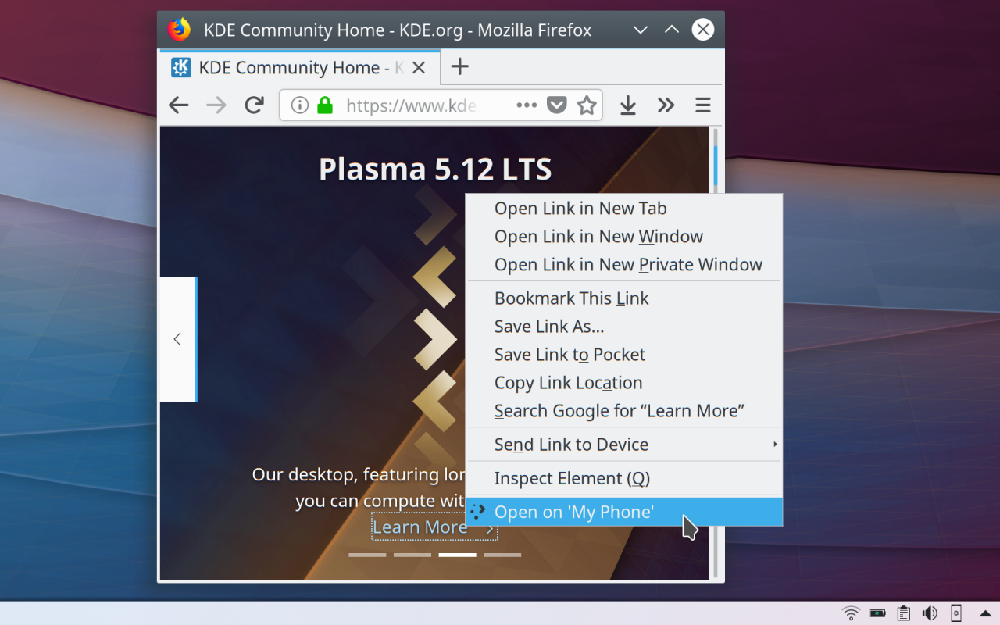

-

Image from the addon page
-
Image from the addon page
Lately, I’ve been switching between Gnome and Plasma. Both are great desktop environments and, like all the other software in the world, both have some shortcomings. So, this is not a flamewar post, nor is intended to start yet another one.
Yesterday, I logged on a Plasma session and opened Firefox to check my email, social network accounts and read the news. Moments after firing up the browser, I got a Plasma notification about an integration with my browser of choice. I clicked on it and it opened the page for an add-on on the official add-ons website for Firefox.
The name of the add-on was "Plasma Integration". On the description it read:
Multitask efficiently by controlling browser functions from the desktop, even while Firefox is in the background. Manage audio and video playback, check downloads in the notification area, send files to your phone using KDE Connect and more inside the KDE Plasma Desktop!
I was struck. This set of functionalities provided by the add-on are what I long wanted for Firefox on a desktop environment, especially the KDE Connect integration.
This means one less shortcoming in the Plasma Desktop. So, thank you, Plasma developers and community.